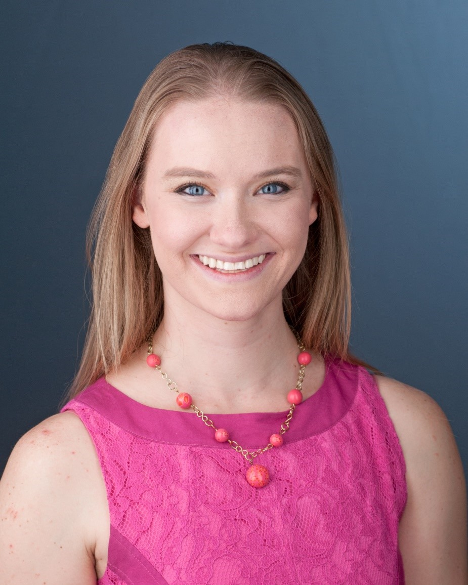
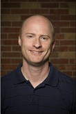
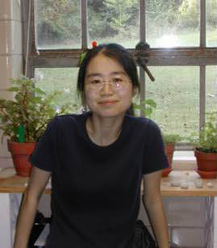

John Kennedy Kelly Scientist

Kelly Lab 2010 participates in Brew-to-brew run, a relay race from Kansas City to Lawrence.
Kelly Lab 2020 displays pandemic fashion sense.
Left to right: Sharif Tusuubira, Apolonia Arteaga, Guled Abdi, Paris Veltsos, John Kelly. Middle: Aisha Mohammed
Current scholars
Lab survivors
Paris Veltsos
Research Scientist, Vrije Universiteit Brussels
Sharif Tusuubira
Research scientist, Pfizer Pharmaceutical Company
Elizabeth Everman
Assistant professor, University of Oklahoma
Keely Brown, PhD 2019
Postdoctoral reseacher · University of California, Riverside
Patrick Monnahan, PhD 2016
Computational Biologist, Adaptive Biotechnologies
Carolyn Wessinger
Assistant professor, University of South Carolina
Desiree Forsythe
Assistant professor, Santa Clara University
Jack Colicchio
Postdoctoral Researcher, University of California, Berkeley
Stephen Hudman

Associate Professor and Chair of Biology, Truman State University
Julius Mojica, PhD 2011
Vegetable and Crop Density Leader, Pairwise Crop Science
Liza Holeski, PhD 2007
Associate Professor, Northern Arizona University
Scott Jablonski, DMV
Vetrinarian
Sarah Bodbyl, PhD 2012
Faculty Developer, Colorado School of Mines
Tyler Ternes, MD
Radiologist
Terra Lubin
Postdoc, KU
Vanessa Koelling
Assistant Professor, Auburn University at Montgomery
John Sahrmann

Statistical Data Analyst at Washington University School of Medicine in St. Louis
Alison Scoville

Associate Professor, Central Washington University
Young Wha Lee, PhD 2009
Breeding Informatics Leader, CGIAR
Peniel Tefera Zelalem, MD
Clinical Assistant Professor Internal Medicine
 Tara Marriage, PhD 2009
Tara Marriage, PhD 2009
Online Lecturer, Undergraduate Biology, University of Kansas
Boryana S. Koseva, PhD

Sr. Bioinformatics Scientist, Children’s Mercy Kansas City
Arathi Seshadri, PhD
Colorado State University
Garrett Tibbetts, MD

Inmate, FCI MORGANTOWN (A minimum security federal correctional institution)
Arash Sattarin, MD

Clinical Assistant Professor Internal Medicine
Alex Martin
Graduate student, KU
Amanda Katzer
Graduate student, KU